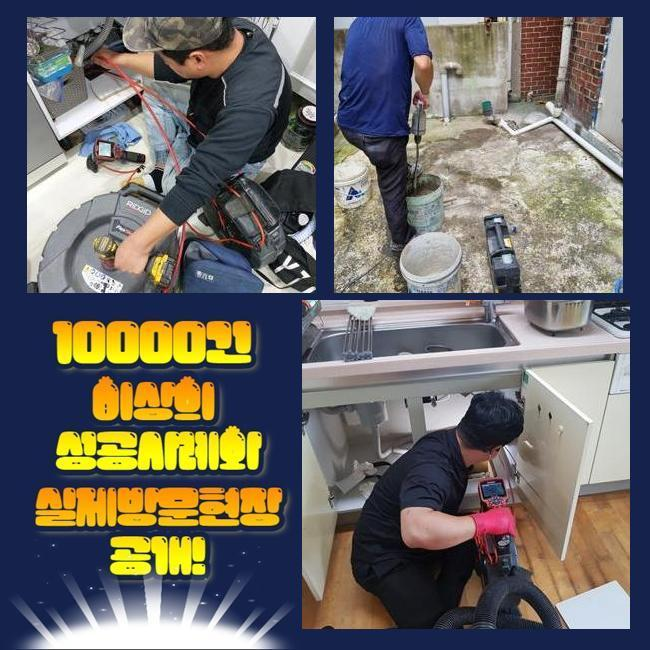
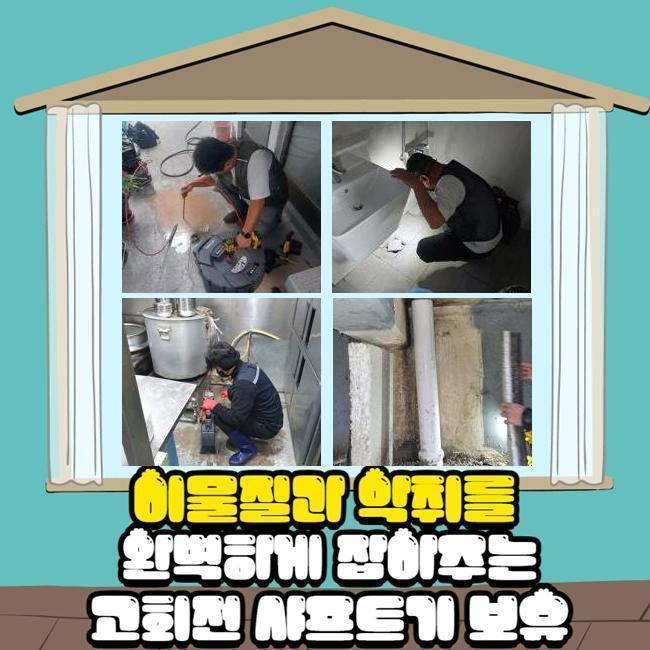
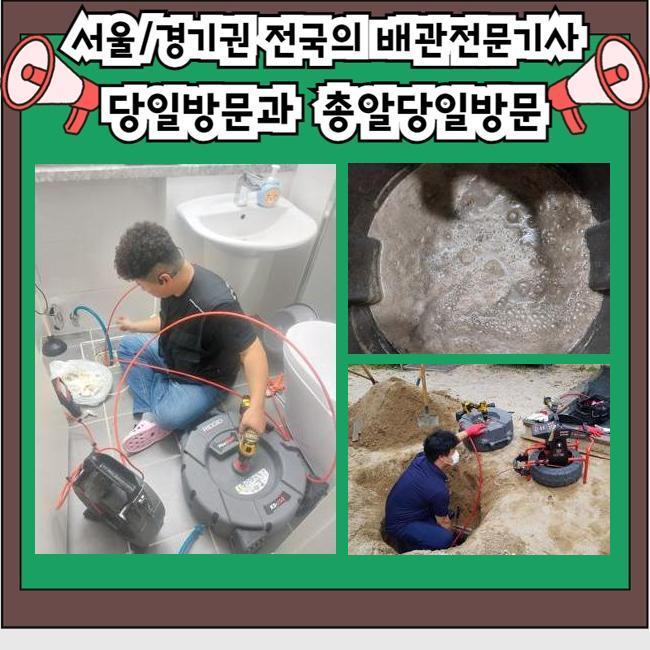
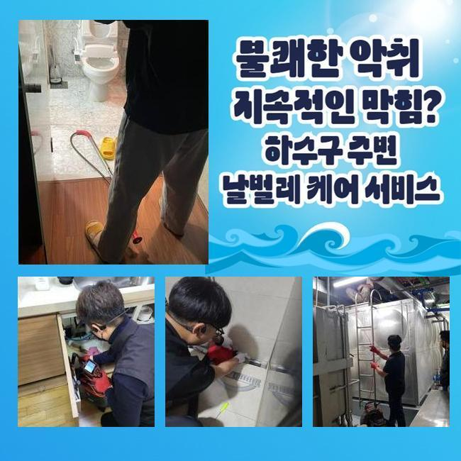
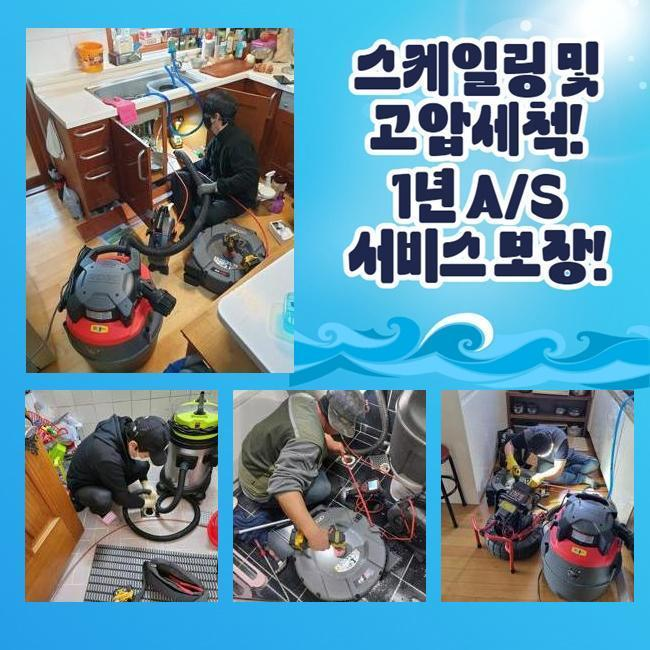
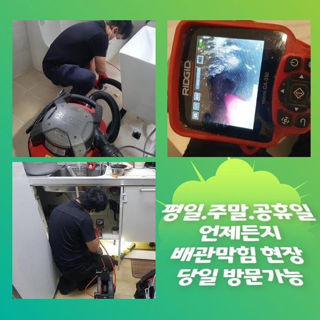

🏠 정왕3동싱크대막힘 산현동 하수구청소 배관뚫는업체
용인 싱크대막힘 전문 시공 후기

📋 작업 개요
- 위치: 용인
- 서비스 유형: 싱크대막힘, 하수구막힘, 배관막힘, 맨홀막힘, 집수정막힘, 역류해결, 뚫는업체, 배관청소, 고압세척, 배관보수
- 작업 일시: 2024. 10. 24. 18:07
- 업체명: 하수구수사대 (010-5615-2118)
🔍 문제 상황
정왕3동싱크대막힘 산현동 하수구청소 배관뚫는업체
하수 시스템의 불통으로 인하여 집수정에 하수가 지속적으로 고이면 어떻게 조처를 할 지 생소하다고 생각하실 텐데요
여기저기를 관찰하기만 할 뿐 직결적인 대처를 하지 못해서 흐린 눈을 하다가 상황이 결국 확대될 때가 생각보다 많습니다
오늘 소개하게 된 현장은 막힘에 따른 불편함으로 커다란 불편함이 터져나오고 있던 다세대 주택 형태였어요
여기는 단독주택이 아니고 복수의 세대들이 동시에 물을 쓰기 때문에 하수 곤란이 빈번한 곳이었습니다
하수구 시설에 제동이 걸려도 중앙배관을 함께 이용하므로 배수시스템의 어떤 구역에서 고장이 벌어진 것이라고 딱 잘라 말할 수 없어요
하수구 고장에 대한 주범을 특정하는 것에 여러 노력이 들어가는 상황들이 많습니다
오늘 문제의 배경이 된 장소에 살고계시는 가구원분들이 여러 편의를 봐주셨기에 업무 전체가 편안하고 앞당겨서 완수할 수 있었습니다
설치되어 있는 집수정의 오류를 고쳐드리고 세부적 청소도 하려면 단수가 불가피하다보니 분명히 다들 조금씩 힘드실 것입니다
건물에 머무는 모든 분들이 생활용수의 공급을 되찾아서 일상을 다시 보낼 수 있어야하니 웬만하면 함께 협의해서 시간을 만들어 주심이 중요합니다

🔎 원인 분석
💡 전문가 진단: 정밀 진단 장비를 사용하여 슬러지의 고착 여부를 판명하고 타격/세척 작업을 실시했습니다.
사전 공고를 하고 하수관의 오류가 빚어진 섹션인 건물의 지하실을 탐색하여 문제를 파악해 주었습니다
육안으로 판별해도 기름 때들이 관로 곳곳에 가득하게 끼어있는 모습을 감별해 내게 되었습니다
다수의 실내에서 폐수가 되는 오염물질들 모두는 이 라인을 넘어서 야외의 집수정으로 연결되게 됩니다
실내와 옥외를 잇는 구간에 스티키한 기름때들과 물때같은 뒤엉킨 불순물의 침범으로 인해 원활하게 통과하지 못하고 압박받아 역류되는 일이 발현된 상황이었죠
주민들께서 집회를 거치시고 장시간 고심하다가 보수를 도와달라고 의뢰를 맡겨주시게 된겁니다
막힘이 보통 일이 아니라면 시간이 조금 더 소요되더라도 제대로 고쳐줄 수 있는 숙련공을 물색하는 것이 번거로움을 줄일 수 있으므로 그 부분을 애쓰셨다고 하셨습니다
지하실로 진입하게 되는 계단 몇 칸으로도 물이 범람했었던 흔적을 눈치채게 되었는데 저희가 오기도 전에 미끄러질까봐 계단을 주민분들이 청소해 주셨더라고요
그 덕분에 신속하게 업무에 돌입하여 전체적인 작업 시간을 단축하여 주민분들의 불편함도 줄어들었습니다
저희가 가져간 소형 카메라를 파이프를 따라 배치하여 내측을 살펴보며 오늘의 시공을 어찌 해결해줄 것인지 청사진을 그리게 되었습니다
샤프트라는 모터로 도는 기구로 배수구에 축적되어 있는 기름때 및 이물질들을 남기지 않고 정리를 해주면서 관리를 해나갔습니다
야외시설로 이동하는 곳까지도 심도 깊게 관찰해보고 하나도 남지않게 신경쓰면서 차례대로 하나씩 정리해 나가는 것입니다

🔧 작업 과정
하수의 역류가 일어난 하수구 탐방을 해보면 거의 다 기름기로 빼곡하게 덮혀있을 컨디션일 수 있으니 세심하게 정화 단계를 실시해야 합니다
작은 단위로 나눠진 슬러지는 잘 걸어서 건져올려내야만 차후에 비슷한 상황을 경험하지 않을 수 있어요
기름입자는 약간씩만 끼어있어도 똘똘 말리는 성향이 있어서 재발할 수 있는 가능성을 내포하고 있습니다
옥외 맨홀 안을 들여다보니 기름 슬러지로 가득 머물러있는 실태를 볼 수가 있었는데요
기름 슬러지의 양이 방대하면 통수가 당연히 이뤄지지 않으며 악취까지 심각하게 퍼져서 불쾌함을 줄 것입니다
막힘의 초기에는 딱히 거슬린다 여기지 않았던 고객님께서도 무더위가 찾아오면 기하급수적으로 늘어난 악취로 극도의 불편한 감정을 경험하시게 될 것입니다
처리를 담당해드리는 모습을 주민분들도 함께 면밀히 살펴보시는 와중에 이것저것 물어보셨습니다
하수구에 기름을 붓지 말고 찌꺼기도 잘 걸러주고 한 가구에도 여러시설들이 배수로를 각자의 집에서 청소를 정기적으로 더 말끔하게 해주자고 논의하고 계셨네요
건물 내부 여기저기를 이동하면서 깔려있는 집수정을 몽땅 스케일링 해주었습니다
지어진 지 오래된 건물에 많은 분들이 머무르고 계신데 단 한번도 하수구 정화작업을 상세하게 받았던 적이 없어서 더욱 진화하게 된 겁니다
부패해버린 찌꺼기들도 대량으로 응집된 상태였고 하수구 세척을 하면서도 시간도 오래 소요됐습니다
명확한 결과를 도출해서 믿어주신 부분에 부합하고자 체크하지 못한 쪽은 없는지 지속적으로 확인을 해가며 하수구 세정을 해주었습니다
통행하시던 행인분들도 임하는 자세에서 믿을만 하다고 생각을 하신건지 하수구 고장이 나게됐을 때 처리받고자 하면 연락은 무슨 방도로 하면 되는지에 대해 호기심어린 자세로 물어보시면서 연락처를 저장해두기도 하시더라고요
집안에 달린 배수로들 전부와 집수정까지 물이 차올라서 애로사항이 있던 배관의 세척을 마감지으면서 공들여 작업한 결과물로 폐수가 원만히 달성되었는 지 마무리 통수검사를 실시해요
작업 전에 잠궜던 밸브를 오픈하고 쾌적함을 갖추게 된 배관 안으로 카메라 장치를 연결하고 내려가는 모습을 관찰했어요
깊이가 대단한 집수정이다보니 내시경으로는 저 아래까지 선명하게 존재감을 존재감을 드러나지는 않지만 모니터링을 직접 해보면 맑게 변한 물들과 약간의 찌꺼기가 섞인 채로 통쾌하게 빠져나가는 상황임이 확실시 되었습니다
바깥의 집수정 인근에 내부의 기름찌꺼기를 모조리 필터링해 줄 수 있는 거름망을 받쳐두고 물을 의도적으로 버려서 작은 불순물까지도 모두 제거해서 만족도를 높일 수 있었네요


✅ 작업 완료
여러 세대가 사는 곳은 구체적인 일부 배관들에서 오류가 발생했을 것이라고 단정 짓기 곤란하니까 모든 구성원분들께서 하수관의 바람직한 이용에 힘을 써야 할 것입니다
이번에 만나게 된 빌라의 주민 대표님도 공고문을 만들어서 저희가 언급한 하수구에 대한 대처법을 교육해서 청소한 그대로가 지속되는 쪽으로 진전을 이루겠다고 하셨습니다
집단적으로 하수 시설을 사용하니까 불가피하게 공용 하수 시스템에 장애가 생길 수 있지만 이러한 일들이 최대한 적게 미리미리 예방할 수 있는 고객님 차원의 방법들이 있기 때문입니다
집안에 가까운 하수구에 생활용품과 같은 물건들이 휩쓸려 배출되지 않게 늘 주시를 해야하며 책임감을 느끼고 빠짐 없이 관리하는 습관을 길러야해요
집수정까지 물이 차올라서 인해서 노파심이 드시는 주민분들께서는 망설임 없이 전문업체의 방문으로 마음 놓고 사용하셨으면 합니다!




⚠️ 주방 싱크대 배관 막힘 예방 수칙
- ✅ 기름기가 묻은 식기나 프라이팬은 설거지 전 키친타올로 반드시 기름때를 닦아내세요.
- ✅ 주기적으로 싱크대 개수대에 뜨거운 물을 가득 받아 한 번에 내려 배관 내부 기름을 씻어내세요.
- ✅ 배수구 거름망을 미세한 필터로 사용하시고 음식물 찌꺼기가 틈으로 새어 들지 않게 관리하세요.
- ✅ 베이킹소다와 식초를 뜨거운 물과 함께 일주일에 한 번씩 부어주면 배관 살균과 막힘 예방에 좋습니다.
💡 핵심 정리
- 확실한 장비 작업(내시경 점검 및 샤프트 스케일링)으로 원인을 뿌리 뽑습니다.
- 작업 후 1년 이내에 동일한 부위 재발 시 100% 무상 A/S 서비스를 보장합니다.
- 서울 · 경기 · 인천 전 지역에 24시간 언제든 긴급 출동할 수 있도록 항시 대기 중입니다.
❓ 자주 묻는 질문 (FAQ)
🚨 용인 싱크대막힘 문제로 고민이신가요?
정확한 원인 진단과 확실한 시공으로 재발 없는 해결을 약속드립니다.
24시간 긴급 출동 | 서울 · 경기 · 인천 전지역 | 1년 내 재발 시 무상 A/S